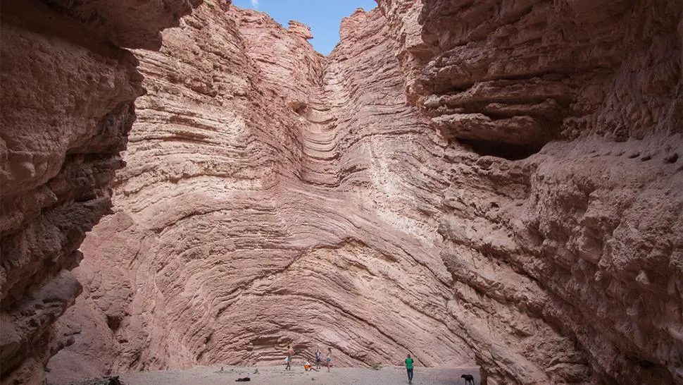
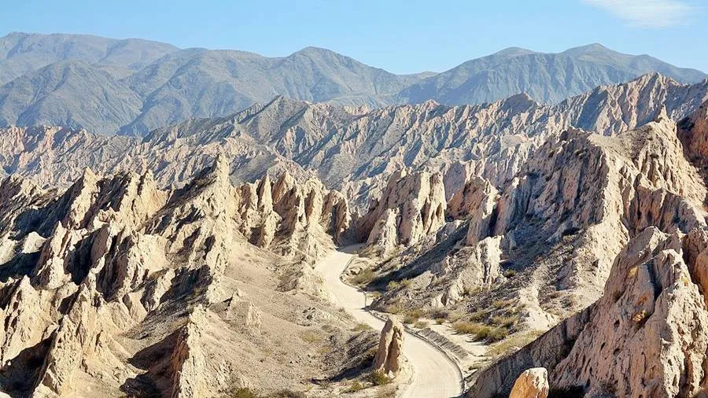
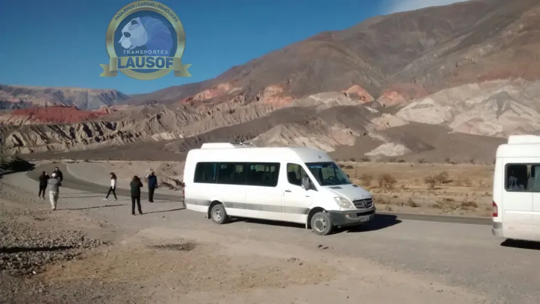
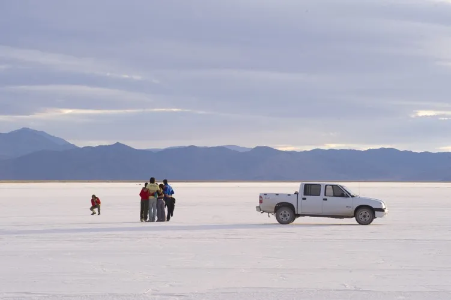
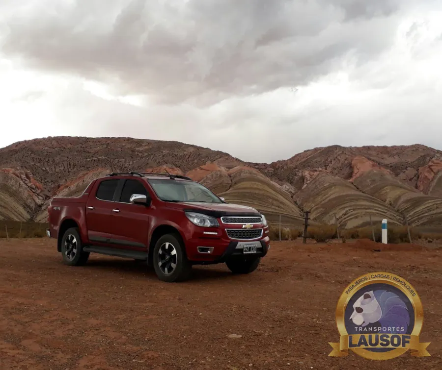
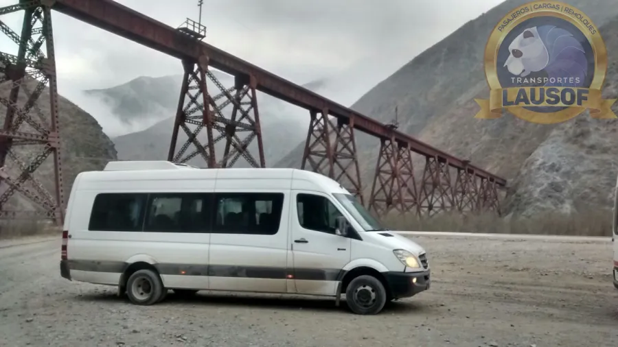
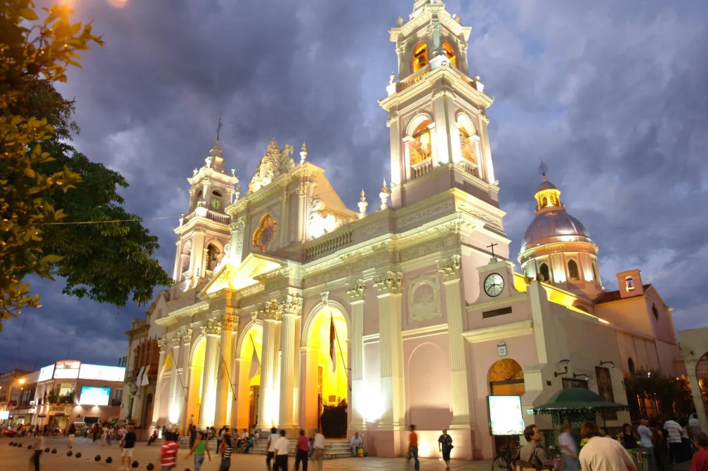
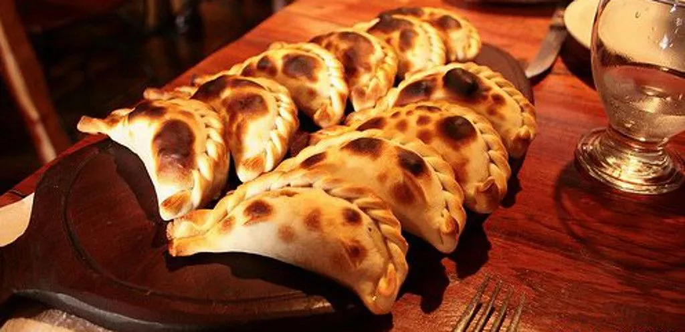
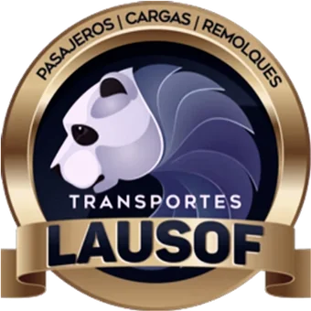

Cafayate y la Quebrada de las Conchas
La ruta 68, la Garganta del Diablo y los viñedos. Asfalto todo el camino: es el clásico día completo desde Salta.
Traslado Salta – Cafayate →Turismo en Salta y Jujuy
Salta enamora, y nosotros la recorremos todas las semanas. Somos una empresa familiar de transporte con base en Salta y hacemos los circuitos clásicos de Salta y Jujuy todo el año, no solo en temporada: traslados desde el aeropuerto, viajes de punto a punto y excursiones de uno o varios días, en combis de 19+1 plazas o camionetas 4x4 con chofer profesional. La reserva se coordina directamente con la empresa que pone la unidad.
Circuitos
El destino lo elige cada grupo; nosotros ponemos la unidad, un chofer que conoce el camino y el respaldo de una empresa habilitada.

La ruta 68, la Garganta del Diablo y los viñedos. Asfalto todo el camino: es el clásico día completo desde Salta.
Traslado Salta – Cafayate →
El camino de montaña de los Valles Calchaquíes, con una subida larga y tramos de ripio cerca del abra.
Salta – Cachi y la Ruta 40 →
El cerro de los Siete Colores y los pueblos de la Quebrada, en Jujuy. El mirador del Hornocal, sobre Humahuaca, suma una subida de ripio.
Ruta, tiempos y altura →
Por San Antonio de los Cobres o por Jujuy, en unidades preparadas para la altura.
Ruta por Purmamarca y la Cuesta de Lipán →
Para quienes buscan el Norte más profundo. El camino es de ripio y lento: se hace en unidades preparadas, y rinde más en dos días.

La zona del Tren a las Nubes y el viaducto La Polvorilla, que conocemos también por nuestro trabajo de años en la Puna.
Salta – San Antonio de los Cobres →Fechas para viajar en grupo: feriados y fines de semana largos, Carnaval de la Quebrada y Serenata a Cafayate.
Planificación
La parte práctica: cómo es el camino, cuánto sube y qué unidad enviamos. Cada viaje puede ser un traslado solo de ida, un día completo o un recorrido de varios días.
| Viaje | Camino, altura y unidad |
|---|---|
| Aeropuerto de Salta (Martín Miguel de Güemes) a los hoteles de la ciudad, ida y vuelta | Corto y asfaltado: unos 11 km. Combi o 4x4, según el grupo y el equipaje. Necesitamos el número de vuelo, la fecha y la hora. |
| Salta a Cafayate | Asfalto todo el camino por la ruta 68. Día completo con paradas en la Quebrada de las Conchas, o solo ida como traslado. Combi. |
| Salta a Cachi | Camino de montaña con la subida larga de la Cuesta del Obispo y ripio cerca del abra. Día completo. Combi o 4x4. |
| Salta a Purmamarca, Tilcara y Humahuaca | Asfalto, en Jujuy: unos 188 km y 2 h 50 min hasta Purmamarca y unos 250 km hasta Humahuaca (estimación de Google Maps). Día completo, o dos si se suma el mirador del Hornocal, al que se sube por ripio desde Humahuaca. |
| Salinas Grandes | El salar está a unos 3.450 m y el camino cruza un abra de unos 4.170 m. Por Purmamarca son unos 255 km desde Salta (estimación de Google Maps). Unidad preparada para la altura; la subida se hace sin apuro. |
| San Antonio de los Cobres y la Puna | El pueblo está a unos 3.775 m. Día completo desde Salta, o el primer tramo de un viaje más largo por la Puna. Combi o 4x4. |
| Iruya | Ripio, altura y camino lento. Lo hacemos en 4x4 o en una combi preparada para ripio, y funciona mejor en dos días que en uno. |
Cómo viajamos
Para agencias y empresas
Somos agencia de turismo habilitada y trabajamos con otras agencias desde hace años: conocemos los tiempos de un receptivo, las paradas que valen la pena y lo que significa cumplir el horario. Operamos todo el año y no solo en temporada, y facturamos A con el CUIT 30-71146774-9.
Si su agencia arma programas en Salta o Jujuy y necesita unidades con chofer para la temporada, escríbanos y coordinamos los horarios.
Si lo que su empresa necesita es un recorrido diario para su gente, vea transporte de personal en Salta. Y si busca una camioneta 4x4, con o sin chofer, vea alquiler de camionetas 4x4.
Escríbanos por WhatsAppPreguntas frecuentes
No. Lo que ofrecemos es una unidad privada con un chofer profesional que conoce el camino y cuida el viaje, pero que no es guía de turismo. Las paradas las elige el grupo. Si quiere un guía habilitado en algún lugar en particular, indíquelo al pedir la cotización y le decimos qué se puede organizar.
Sí. Los choferes trabajan en castellano; un chofer que hable inglés se puede pedir, sujeto a disponibilidad. Los mensajes en inglés se responden en inglés por correo o WhatsApp, y la página tiene su versión en inglés.
Sí. Los traslados desde y hacia el aeropuerto Martín Miguel de Güemes y los hoteles son parte de lo que hacemos, en los dos sentidos, y también directo a Purmamarca o a la Quebrada. Envíenos el número de vuelo, la fecha, la hora, cuántos viajan y si llevan equipaje grande.
En las rutas asfaltadas, una combi de 19+1 plazas. Donde el camino pasa a ser de ripio o sube a la Puna (Iruya, el Hornocal), usamos una camioneta 4x4 o una combi preparada para esos caminos. Se lo indicamos al cotizar, para que no haya sorpresas al momento de la búsqueda.
Las Salinas Grandes están a unos 3.450 m y el camino cruza un abra de más de 4.000 m. San Antonio de los Cobres está a unos 3.775 m. Casi todos sienten la altura el primer día. Subimos despacio, paramos y, si alguien no se siente bien, volvemos. En las páginas de Salinas Grandes y de la Quebrada de Humahuaca están las recomendaciones de los CDC para viajar en altura.
No. Cada viaje se cotiza según la ruta, las fechas, la cantidad de pasajeros y la unidad que necesita. Con esos datos le enviamos el precio, normalmente en el mismo día hábil.
Apenas tenga las fechas. Algunas semanas se completan con meses de anticipación y otras quedan libres, así que envíenos las fechas que está considerando y le decimos qué hay disponible.
Eventos y ocasiones
Además de los circuitos, llevamos grupos a eventos con la misma combi y el mismo chofer de ida y de vuelta. Cada caso tiene su página:
Y en el camino siempre hay tiempo para una empanada salteña, un locro o un tamal: la comida regional es parte del viaje.



Cuéntenos el destino, las fechas, dónde empieza y termina el viaje, cuántas personas viajan y un nombre de contacto. Con eso le enviamos la cotización.
Por correo: contacto@lausof.com, o por WhatsApp al 387 526-9009. Respondemos normalmente en el mismo día hábil.
Consultar disponibilidad